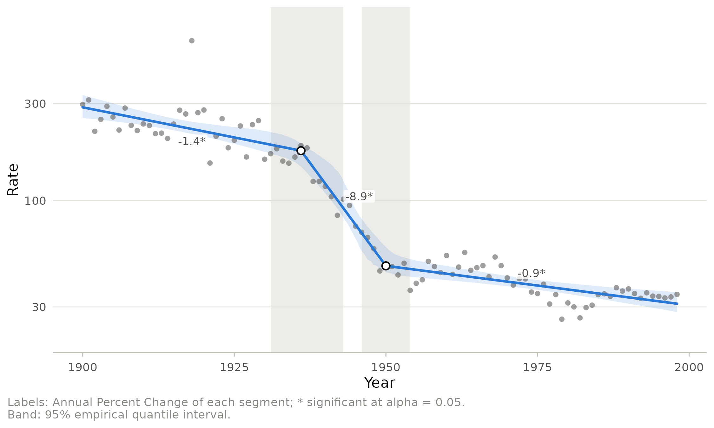
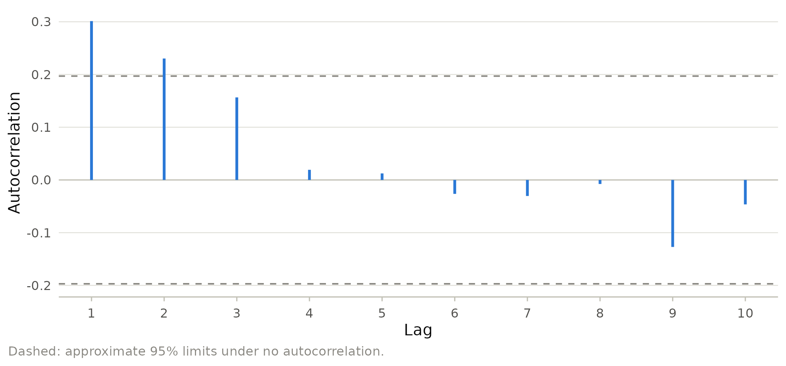

How certain is a trend? Error models and confidence intervals
Source:vignettes/uncertainty.Rmd
uncertainty.RmdAn APC of -2% per year means little without its confidence interval, and the interval depends on assumptions about the errors: is every year equally precise, are neighboring years independent, and is the location of the joinpoint itself uncertain? This vignette analyzes influenza and pneumonia mortality, whose 1918 pandemic peak and the arrival of antibiotics make it a demanding series, under different error models and shows how the conclusions move.
Weights: which years are precise?
With constant variance every year counts equally.
When each value comes with a standard error, or is calculated from
counts, the fit is weighted by the inverse variance; on the log scale
the variance of a rate is approximately its squared standard error
divided by the squared rate (the delta method), and a count of
c events gets weight c. Weights matter when
precision changes over time, for example when a population grows
severalfold over the study period or a disease becomes rare. When the
denominators are similar every year, as for the prevalence of obesity
class III in ontario_bmi, weighted and unweighted fits
agree:
ob <- subset(ontario_bmi, category == "Obesity class III")
weighted <- joinpoint(ob, year, count = count, population = births,
type = "percent", kmax = 2, method = "bic",
ci_method = "parametric")
unweighted <- joinpoint(ob, year, count = count, population = births,
type = "percent", variance = "constant", kmax = 2,
method = "bic", ci_method = "parametric")
data.frame(jp_table(weighted)[, 1:2], weighted = jp_table(weighted)[, 3],
unweighted = jp_table(unweighted)[, 3])
#> Trend Period weighted unweighted
#> 1 Segment 1 2012-2015 -1.64 (-8.19, 5.37) -1.72 (-7.93, 4.91)
#> 2 Segment 2 2015-2021 3.57* (1.34, 5.85) 3.61* (1.35, 5.92)
#> 3 AAPC 2012-2021 1.80 (-0.28, 3.93) 1.80 (-0.22, 3.86)Two kinds of confidence interval
The parametric intervals treat the joinpoints as known. An APC interval uses t quantiles with the standard error from separate regressions of the segments; an AAPC interval uses normal quantiles, or t quantiles when its range lies inside one segment; and the interval of a joinpoint location collects the candidate locations whose best fit is close enough to the overall best (Lerman 1980). Simulations showed that they are too wide for the AAPC (Kim et al. 2017) and can be too narrow for short segments (Kim et al. 2022). The empirical quantile method, the package default, resamples the residuals, refits the whole model including the joinpoint locations 5001 times, and takes percentiles. It therefore reflects the uncertainty about where the trend changed.
fit_par <- joinpoint(flu, year, rate, kmax = 3, ci_method = "parametric")
fit_eq <- joinpoint(flu, year, rate, kmax = 3)
cmp <- merge(
apc(fit_par)[, c("segment", "estimate", "lower", "upper")],
apc(fit_eq)[, c("segment", "lower", "upper")],
by = "segment", suffixes = c("_parametric", "_empirical")
)
cmp$width_ratio <- (cmp$upper_empirical - cmp$lower_empirical) /
(cmp$upper_parametric - cmp$lower_parametric)
cmp
#> segment estimate lower_parametric upper_parametric lower_empirical
#> 1 1 -1.3561789 -1.901468 -0.8078583 -1.989432
#> 2 2 -8.8972068 -11.200782 -6.5338731 -22.178064
#> 3 3 -0.8887484 -1.244888 -0.5313243 -1.270888
#> upper_empirical width_ratio
#> 1 -0.5381131 1.327090
#> 2 -6.6137221 3.335043
#> 3 -0.4656331 1.128498Every empirical interval is wider here. For the short 1936 to 1950 segment it is more than three times as wide and strongly asymmetric: if the two joinpoints move closer together the segment becomes much steeper, and the parametric interval ignores this. Part of the extra width is by design: the resampled residuals are drawn from a smoothed version of their empirical distribution whose tails extend beyond the observed residuals. The fitted curve band and the joinpoint intervals show the same uncertainty on the data scale:
autoplot(fit_eq, joinpoint_ci = TRUE, log_y = TRUE)
Autocorrelated errors
Mortality in adjacent years shares unmeasured influences, so errors may be positively autocorrelated. The autocorrelation function of the residuals shows whether this is plausible:
plot_residuals(fit_par, type = "acf")
A first order autocorrelation can be estimated from the residuals of the model with the most joinpoints, but Kim et al. (2000) found that the correction costs much power to detect joinpoints: a joinpoint and an autocorrelated wiggle are hard to tell apart. A sensitivity analysis over plausible values is more informative:
sens <- lapply(c(0, 0.1, 0.2, 0.3), function(r) {
f <- joinpoint(flu, year, rate, kmax = 3, autocorrelation = r,
ci_method = "parametric")
data.frame(rho = r, joinpoints = toString(joinpoints(f)$estimate),
aapc = aapc(f)$estimate, lower = aapc(f)$lower,
upper = aapc(f)$upper)
})
do.call(rbind, sens)
#> rho joinpoints aapc lower upper
#> 1 0.0 1936, 1950 -2.244445 -2.681685 -1.805240
#> 2 0.1 1936, 1950 -2.243830 -2.707808 -1.777640
#> 3 0.2 1936, 1949 -2.248427 -2.758573 -1.735605
#> 4 0.3 1936, 1949 -2.247200 -2.803794 -1.687418The joinpoints and the AAPC barely move, and the interval widens slowly with the assumed autocorrelation: the conclusions do not hinge on the independence assumption.
References
Kim HJ, Fay MP, Feuer EJ, Midthune DN (2000). Permutation tests for joinpoint regression with applications to cancer rates. Statistics in Medicine 19:335-351.
Kim HJ, Luo J, Chen HS, Green D, Buckman D, Byrne J, Feuer EJ (2017). Improved confidence interval for average annual percent change in trend analysis. Statistics in Medicine 36:3059-3074.
Kim HJ, Chen HS, Byrne J, Wheeler B, Feuer EJ (2022). Twenty years since Joinpoint 1.0: two major enhancements, their justification, and impact. Statistics in Medicine 41:3102-3130.
Lerman PM (1980). Fitting segmented regression models by grid search. Journal of the Royal Statistical Society, Series C 29:77-84.